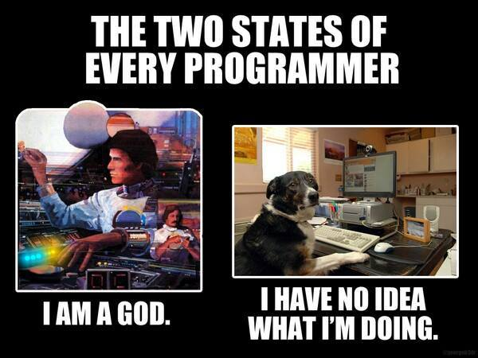

<div class="container-fluid">

    {% assign lastPost = site.posts.first %}
  {% assign lastPostContent = lastPost.content %}

<div class="row">
<div class="col-md-12">
<div class='visible-sm visible-xs'>
<a class='btn btn-lg btn-primary' href="#posts">Goto Posts</a>
<a class='btn btn-lg btn-primary' href="#twitter">Twitter</a>
<br/><br/>
</div>


<div id="carousel-example-generic" class="carousel slide" data-ride="carousel" style="max-width: 480px; margin:auto">
  <!-- Indicators -->
  <ol class="carousel-indicators">
    <li data-target="#carousel-example-generic" data-slide-to="0" class="active"></li>
    <li data-target="#carousel-example-generic" data-slide-to="1"></li>
  </ol>

  <!-- Wrapper for slides -->
  <div class="carousel-inner" style="margin:auto"role="listbox">
    <div class="item active">
      
      
    </div>
    <div class="item">
      
     
    </div>
  </div>

  <!-- Controls -->
  <a class="left carousel-control" href="#carousel-example-generic" role="button" data-slide="prev">
    <span class="glyphicon glyphicon-chevron-left" aria-hidden="true"></span>
    <span class="sr-only">Previous</span>
  </a>
  <a class="right carousel-control" href="#carousel-example-generic" role="button" data-slide="next">
    <span class="glyphicon glyphicon-chevron-right" aria-hidden="true"></span>
    <span class="sr-only">Next</span>
  </a>
</div>

<hr/>
</div>
</div>

<div class="row">
<div class="col-md-8">

<h1 class="entry-title">
{% if lastPost.title %}
    Last post: <a href="{{ root_url }}{{ lastPost.url }}">{{ lastPost.title }}</a>
{% endif %}
{% if post.title %}
    <a href="{{ root_url }}{{ lastPost.url }}">{{ lastPost.title }}</a>
{% endif %}
</h1>

<div class="entry-content">{{ lastPostContent }}</div>

<div class="alert alert-warning" role="alert">
  <span class="glyphicon glyphicon-exclamation-sign" aria-hidden="true"></span>
  For comments go to the actual post: <a href="{{ root_url }}{{ lastPost.url }}">{{ lastPost.title }}</a>
</div>
</div>

<hr class='visible-sm visible-xs' />

<div class="col-md-4">
<a id="twitter" class="twitter-timeline" href="https://twitter.com/pearpages" data-widget-id="599942102483623936">Tweets by @pearpages</a>
<script>!function(d,s,id){var js,fjs=d.getElementsByTagName(s)[0],p=/^http:/.test(d.location)?'http':'https';if(!d.getElementById(id)){js=d.createElement(s);js.id=id;js.src=p+"://platform.twitter.com/widgets.js";fjs.parentNode.insertBefore(js,fjs);}}(document,"script","twitter-wjs");</script>

<hr class='visible-sm visible-xs' />

<h2 class="page-heading" id="posts">Posts</h2>
  <ul class="post-list">
    {% for post in site.posts %}
      <li>
        <span class="post-meta">{{ post.date | date: "%b %-d, %Y" }}</span>

        <h2>
          <a class="post-link" href="{{ post.url | prepend: site.baseurl }}">{{ post.title }}</a>
        </h2>
      </li>
    {% endfor %}
  </ul>

</div>
</div>

<div class="row">
<div class="col-md-12">
  <p class="rss-subscribe">subscribe <a href="{{ "/feed.xml" | prepend: site.baseurl }}">via RSS</a></p>
</div>
</div>
</div>
